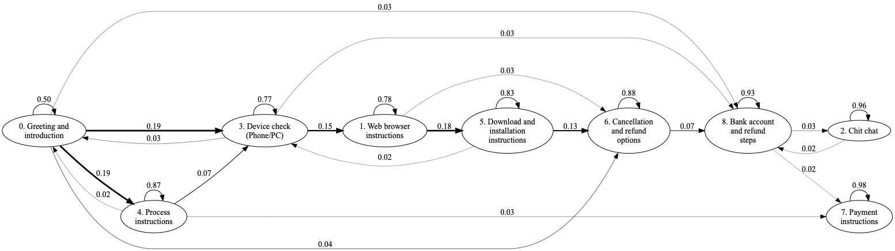

Developing an ideal victim bot requires a deep understanding of scammer strategies and behaviours. Through analysis of scam baiter data, we have developed algorithms and tools that tease apart patterns in scammer utterances through a call, allowing the recognition and extraction scam script stages and identification of scammer behaviours assocaited with their social engineering techniques. These insights will be incorporated into our bot training, providing more appropraite bot responses and allowing the tuning of the bots attempts to do social engineering on the scammer: using tricks of persuasion to fool scammers into believing they have a viable, even lucrative victim and convincing them to stay on the line.
We analysed 341 conversations between scammers and scam baiters sourced from YouTube. We wished to determine the feasibility of extracting useful information on scam strategies and scam scripts with a largely automated process. Through combination of state of the art topic modelling [1] and hidden Markov models for time sequence modeling we successfully extracted meaningful scam progression sequences that match observations from close reading and appear to represent scripts followed by scammers.
Below is the state transition graph we extracted from "refund" scams. We can see that the scam starts with greetings and an introduction to the scam scenario: there has been a substantial purchase on the victims' amazon account and the scammer is calling to check that it was a bona-fide purchase from the victim. The scammer explains that the victim should install "security software" and proceeds with the next steps in the script: check that the victim is in front of their computer or using a smart phone, direct the victim to the "teamviewer" download page (teamviewer is a remote desktop application with which the scammer can view the victims screen and control the victims computer), direct them to install teamviewer. At this stage the scammer is ready to make their move. They direct the victim to access their bank account in order to receive the refund, and in the process obtain login credentials.
Our data contained examples of four scams, with between 10 and 120 transcripts in each. We found that for those with more than 100 transcripts, our approach produced clearly interpretable scam stage progressions that closely followed what we saw in the conversations. Armed with this information, our bots will be able to generate responses appropriate to the current scam stage, increasing believability and giving the bots more information to leverage for stretching out the calls.